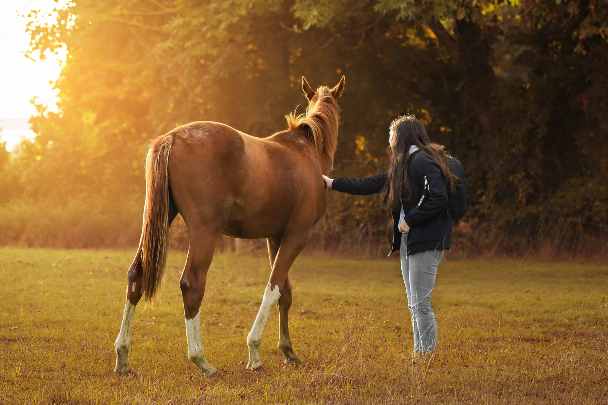

DERRIÈRE L’OBJECTIF
SANDRA,
PHOTOGRAPHE PASSIONNÉE
Mon histoire avec la photographie a commencé très tôt.
Au collège, armée de mon téléphone, je capturais déjà les moments les plus précieux de mon quotidien, en particulier ceux partagés avec mon chien Harley, un petit rescapé qui a éveillé en moi une profonde empathie pour le monde animal.
En 2017, l’obtention de mon premier appareil photo fut une révélation. J’ai alors compris que la photographie était bien plus qu’un simple loisir : c’était une véritable passion. Je me suis naturellement tournée vers la photographie animalière, une façon pour moi de rendre hommage à ces êtres si attachants et de sensibiliser le public à leur beauté et à leur cause.
Aujourd’hui, diplômée en photographie, je mets mon savoir-faire et ma sensibilité au service de vos compagnons à quatre pattes. Mon objectif ? Capturer l’essence de leur personnalité, leur beauté naturelle et les instants de complicité qui vous unissent.
Au fil du temps, ma curiosité m’a conduite à explorer d’autres univers : la photographie de produit, où chaque détail compte pour révéler la matière, la lumière et la mise en valeur d’un objet ; et la photographie de sport, où l’énergie, la concentration et le mouvement deviennent des histoires à raconter à travers l’image.
Ces domaines nourrissent ma créativité et renforcent ma maîtrise technique, tout en gardant ce qui me définit : une approche sincère et artistique.
Je suis ainsi disponible pour vos shootings animaliers, de sport ou de produit, ainsi que pour la couverture de vos événements.
